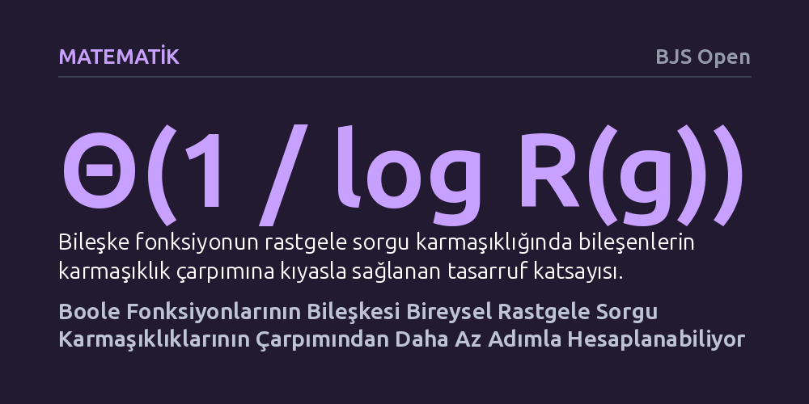

MATEMATIK · BJS Open · 2026-10-24
Çalışma, iki Boole fonksiyonunun bileşkesini çözmenin bu fonksiyonların bireysel rastgele sorgu karmaşıklıklarının çarpımını gerektirip gerektirmediğini araştırıyor. Yazarlar özel fonksiyon aileleri kurarak bileşkenin bu çarpımdan logaritmik faktör kadar daha az sorguyla hesaplanabileceğini gösteriyor.
Büyük ve karmaşık algoritmik problemleri alt parçalara bölerek çözmenin maliyetinin, parçaların maliyetlerinin basit bir çarpımı olmak zorunda olmadığını ve sistemlerin beklenenden daha verimli birleşebileceğini gösterir.

Bilgisayar biliminde en sık başvurulan yöntemlerden biri, büyük ve karmaşık bir problemi daha küçük alt problemlere bölüp her birini ayrı ayrı çözmektir. Ancak iki işlem birbiri ardına bağlandığında, yani bir fonksiyonun çıktısı diğerinin girdisi olduğunda, toplam çözüm maliyetinin ne olacağı sorusu kuramsal hesaplamanın en temel bilmecelerinden biridir. Uzun yıllardır kabul gören sezgisel beklenti, rastgele algoritmalar kullanıldığında bileşke işlemin sorgu maliyetinin, bileşenlerin bireysel sorgu maliyetlerinin çarpımına eşit olması gerektiği yönündeydi.
Bu soru yalnızca soyut bir merak konusu değildir; algoritmaların ne kadar hızlandırılabileceğini ve donanımların sınırlarını doğrudan ilgilendirir. Eğer iki fonksiyon birleştiğinde birbirlerinin ara adımlarından tasarruf sağlayabiliyorsa, karmaşık hesaplamaların kuramsal olarak düşünüldüğünden çok daha ucuza mal edilebileceği anlamına gelir. Bu çalışma, söz konusu temel kabulün her zaman geçerli olmadığını göstererek kuramsal bilgisayar bilimindeki köklü bir varsayımı sınıyor.
Çalışmada herhangi bir fiziksel deney, anket veya bilgisayar simülasyonu kullanılmamıştır. Bunun yerine araştırmacı, kuramsal karmaşıklık teorisinin katı matematiksel yöntemlerini izlemiştir. Daha önce yalnızca girdilerinin bir kısmı tanımlı olan kısmi fonksiyonlar için bilinen bazı karmaşıklık ayrımları ele alınmış ve bunlar tüm girdiler için tanımlı olan tam Boole fonksiyonlarına dönüştürülmüştür. Bu süreçte doğrusallaştırılmış sorgu karmaşıklığı ve gürültülü rastgele sorgu karmaşıklığı gibi farklı kuramsal modeller birer köprü olarak kullanılmıştır.
Matematiksel ispatların güvenilirliğini en üst düzeye çıkarmak amacıyla, yazar sadece geleneksel kalem-kağıt ispatlarıyla yetinmemiştir. İnşa edilen fonksiyon aileleri ve temel teorem, matematik dünyasında kabul görmüş Lean etkileşimli teorem kanıtlayıcısı ortamında biçimsel olarak kodlanmıştır. Bu sayede her bir mantıksal adım bilgisayar destekli denetimden geçirilmiş, insan hatasından arındırılmış bağımsız bir matematiksel doğrulama elde edilmiştir.
Araştırmanın ana bulgusu, iki tam Boole fonksiyonunun bileşkesinin sorgu karmaşıklığının, bileşenlerin rastgele sorgu maliyetlerinin saf bir çarpımına eşit olmak zorunda olmadığını kesin olarak ortaya koymasıdır. Yazar, öyle özel fonksiyon aileleri kurmuştur ki, bileşkenin rastgele sorgu maliyeti, bileşenlerin karmaşıklıklarının çarpımının logaritmik bir faktöre bölünmesiyle elde edilen miktara kadar düşmektedir. Bu durum, fonksiyonların birlikte çalışırken birbirlerinin bilgi gereksinimlerini kısmen paylaştığını ve fazladan sorgu ihtiyacını elediğini gösterir.
Buna ek olarak çalışma, karmaşıklık zincirinde yer alan sabotaj karmaşıklığı, maksimum çelişki karmaşıklığı ve doğrusallaştırılmış sorgu karmaşıklığı gibi birbirine komşu kuramsal modeller arasındaki sınırları da netleştirmiştir. "VE-ile-VEYA" yapısındaki Boole yapıları kullanılarak çelişki ve sabotaj karmaşıklıklarının kıyaslanamaz olduğu kanıtlanmış, rastgele karmaşıklığın kendi kuramsal bileşke sınırından en fazla logaritmik bir çarpan kadar sapabileceği gösterilmiştir.
Elde edilen sonuçlar, rastgele algoritmaların doğası gereği tahmin edilenden daha esnek davrandığını gösteriyor. Kuramsal olarak iki algoritmayı ardışık çalıştırmak, her zaman adım sayılarını çarpmak anlamına gelmez; belirli matematiksel koşullarda algoritmalar birbirlerinin rastgele seçimlerinden bilgi sızdırarak sorgu tasarrufu sağlayabilir. Bu durum, karmaşıklık teorisinde fonksiyon bileşkelerinin analizinde daha incelikli yöntemlere ihtiyaç duyulduğunu ortaya koymaktadır.
Yine de çalışmanın sınırlarını doğru kavramak gerekir. Buradaki logaritmik kazanç, günlük hayatta kullandığımız yazılımların veya genel algoritmaların aniden hızlanacağı anlamına gelmez. Bulgular son derece özel olarak tasarlanmış matematiksel fonksiyon yapıları için geçerlidir ve asıl değeri, hesaplamanın nihai sınırlarını belirleyen teorik temelleri yeniden tanımlamasında yatmaktadır.